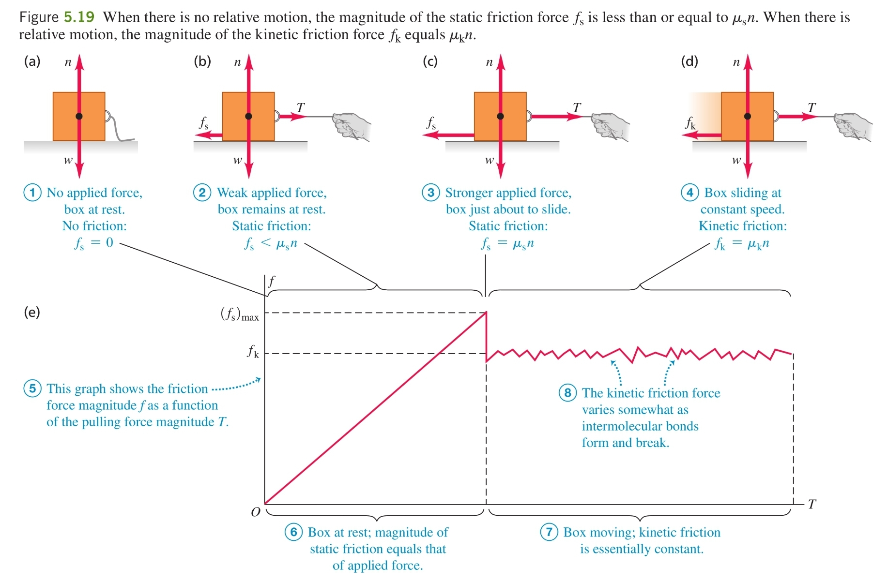

-
Mechanism - when two surfaces come into contact, chemical bonds between them start breaking and forming which cause forces between them. When an external force is applied, friction forces occur between the two surfaces which try to counteract its effects.

-
Static Friction Force ( ) - before an object can start sliding across a service, a force with a certain magnitude needs to be exerted on it. If a force ( ) less than the force required is applied, the object does not move because the surface is exerting an opposite force called the static friction force. The latter, however, can only grow so large and when it is overcome, the object starts moving.
a) magnitude
b) direction - opposite to the applied force's component which is perpendicular to the normal force
c) maximum static friction force - proportional to the normal force
- - coefficient of static friction
- once this magnitude is reached, static friction has no further effect and kinetic friction kicks in
-
Kinetic Friction Force ( ) - the force which acts on an object as it slides on a surface
a) magnitude - approximately proportional to the magnitude of the normal force
- - coefficient of kinetic friction
b) direction - always perpendicular to the normal force
-
Friction Force ( ) - either the static friction force or the kinetic friction force at any time
-
Fluid Resistance - the force that a fluid exerts on an object passing through it

a) direction - always opposite the object's velocity relative to the fluid
b) magnitude
- for small speeds
- a proportionality constant which depends on the shape and size of the object
- for high speeds - also called drag
- drag coefficient
c) terminal velocity - motion in a fluid does not have constant acceleration, since the motion fluid resistance depends on speed. Therefore, if an external force is actively accelerating an object through a fluid, its speed will grow, but so will the fluid resistance until it fully cancels out the external force. At this point, the velocity of the object becomes constant - it is at its terminal velocity. This is typically used in a context of falling.

- at low speeds
Terminal speed is reached when the acceleration is zero:
- at high speeds
Terminal speed is reached when the acceleration is zero:
- observations:
- objects with more mass have a higher terminal velocity and thus appear to fall faster through air